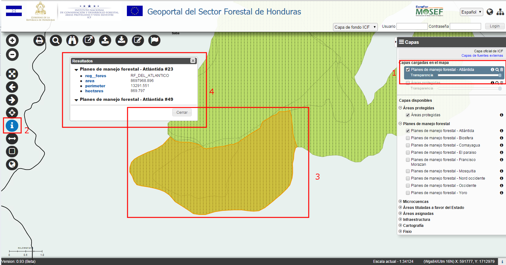

Permite obtener información de los elementos de la capa actualmente consultable (selecciónada en la Lista de Capas Cargadas en el Mapa) en el punto que se pincha en el mapa.
El resultado de la acción es la visualización de una ventana que permite la consulta de los valores relaciónados a los elementos espaciales selecciónados, contenidos en la tabla de atributos de la capa.
Los elementos selecciónados están definidos por el título de la capa y por un campo identificativo.
El campo identificativo está configurado por el Administrador a través del Panel de Administración.

Identificación / Interrogación de un dato
Para hacer una interrogación sobre un dato hay que seguir estos pasos: